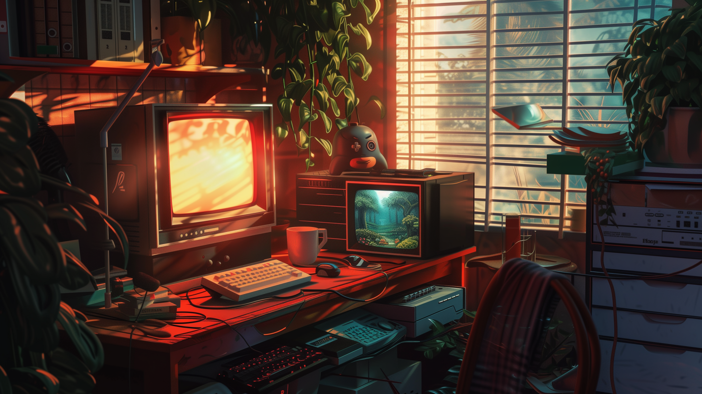
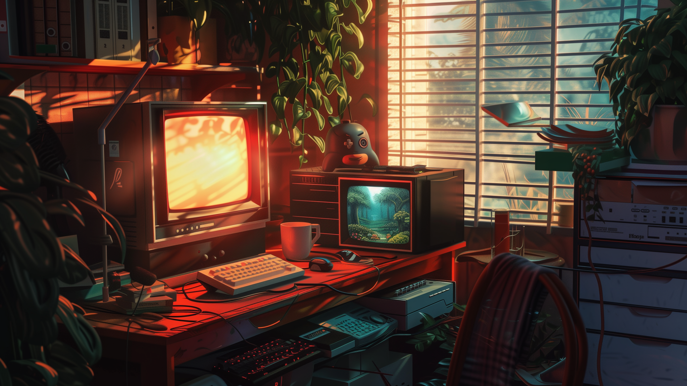
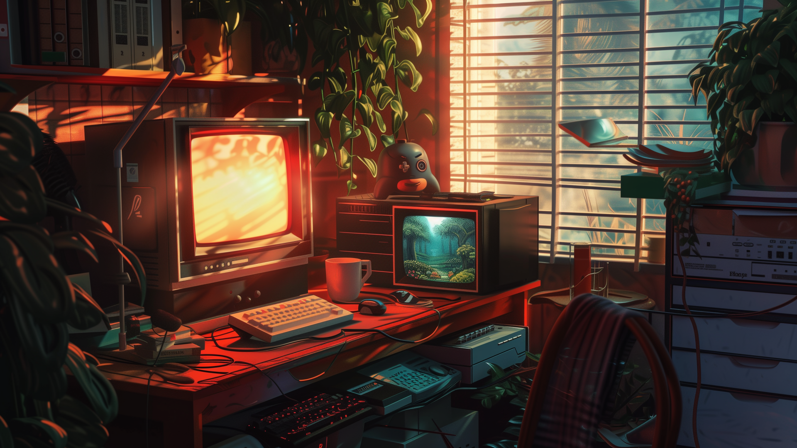

Galería de Imágenes
 



Berserk es un manga épico creado por Kentaro Miura que ha cautivado a generaciones de fanáticos con su historia oscura, compleja y llena de acción. Sigue las aventuras de Guts, un guerrero marcado por el destino, mientras lucha contra fuerzas sobrenaturales, enfrenta tragedias y busca venganza en un mundo brutalmente cruel. La serie explora temas como la lucha interna, la desesperación y la búsqueda de la redención.
